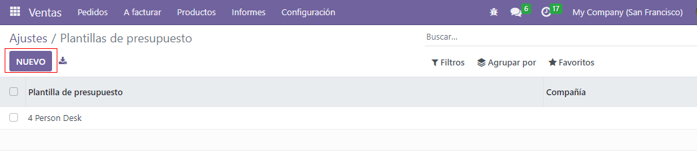

Plantillas de cotización¶
En Ventas de Odoo, los vendedores pueden crear plantillas que pueden volver a usar para productos en común o servicios que ofrece el negocio.
Al usar estas plantillas, las cotizaciones se pueden hacer y enviar mucho más rápido a los clientes sin tener que crear cotizaciones nuevas desde cero cada vez que se realiza una negocioación de ventas.
Configuración¶
Primero, active estos ajustes en y baje a la sección de Cotizaciones y órdenes.
En esa sección, marque la casilla junto a la opción Plantillas de cotización. Aparecerá un nuevo campo con el nombre Plantilla predeterminada en el que podrá elegir una plantilla de cotización predeterminada desde el menú desplegable.
También, al activar la función de Plantilla de cotización, aparecerá un enlace interno de ➡️ Plantillas de cotización debajo del campo Plantilla predeterminada.
Al hacer clic en el enlace, aparecerá una página de Plantillas de cotización desde donde podrá crear, ver y editar plantillas.
Antes de salir de la página de Ajustes, no olvide hacer clic en el botón Guardar para guardar todos los cambios que realizó durante la sesión.
Crear plantillas de cotización¶
Haga clic en el enlace de Plantillas de cotización en la página de Ajustes o vaya a la . Ambas opciones mostrarán la página de las Plantillas de cotización donde podrá crear, ver y editar las plantillas de cotización.
Para crear una nueva plantilla de cotización, haga clic en el botón Nuevo ubicado en la esquina superior izquierda. Al hacerlo, aparecerá un formulario en blanco de la plantilla de cotización que puede personalizar de muchas maneras.
Comience escribiendo un nombre para la plantilla en el campo Plantilla de cotización.
Luego, en el campo La cotización vence después de, escriba por cuántos días será válida la plantilla, o puede dejar el campo con su valor predeterminado de 0 para mantener su validez de manera indefinida.
Si las funciones Firma electrónica y/o Pago en línea están activadas en los Ajustes (), estas opciones estarán disponibles en el campo Confirmación en línea.
En el campo Confirmación en línea, seleccione la casilla junto a Firma para solicitar una firma electrónica del cliente para confirmar una orden. Seleccione la casilla junto a Pago para solicitar un pago en línea del cliente para confirmar una orden.
Ambas opciones se pueden activar de manera simultánea, en cuyo caso, el cliente debe proporcionar una firma y un pago para confirmar una orden.
Luego, en el campo Correo electrónico de confirmación, haga clic en el campo en blanco para que aparezca un menú desplegable. Desde ahí, seleccione una plantilla de correo electrónico ya configurada para enviarla a los clientes al confirmar una orden.
Truco
Para crear una nueva plantilla de correo electrónico directamente desde el campo Correo electrónico de confirmación, comience a escribir el nombre de la nueva plantilla de correo electrónico en el campo y seleccione: Crear o Crear y editar… del menú desplegable que aparece.
Al seleccionar la opción Crear, se crea la plantilla de correo electrónico, la cual podrá editar después. Al seleccionar Crear y editar… se crea la plantilla de correo electrónico y aparece una ventana emergente para Crear un correo electrónico de confirmación, en donde podrá personalizar y configurar la plantilla de correo de manera inmediata.

Una vez que haya realizado todas las modificaciones necesarias, haga clic en Guardar y cerrar para almacenar la plantilla de correo electrónico y regresar al formulario de cotización.
Si trabaja en un ambiente multiempresa, utilice el campo Empresa para asignar la empresa a la cual aplicará está plantilla de cotización.
En el campo Recurrencia, podrá elegir de una variedad de cantidades de tiempo ya configuradas (por ejemplo, Mensual, Trimestral) para asignar qué tan seguido debe ocurrir esa plantilla de cotización.
Nota
El campo Recurrenncia solo aplica a los planes de suscripción. Para obtener más información, consulte la documentación en Planes de suscripción.
Pestaña de líneas¶
En la pestaña Líneas, puede agregar los productos a la plantilla de cotización al hacer clic en Agregar un producto, organizarlos al hacer clic en Agregar sección (y puede arrastrar/soltar los encabezados de las secciones), y puede agregar mas información discrecional (como detalles de garantía, términos, etc.) al hacer clic en Agregar una nota.

Haga clic en Agregar un producto en la pestaña Líneas de un formulario de plantilla de cotización para agregar uno a la plantilla de cotización. Al hacerlo, aparecerá un campo vacío en la columna Producto.
Si hace clic ahí, aparecerá un menú desplegable con todos los productos disponibles en la base de datos. Seleccione los productos que desee desde ese menú para agregarlos a la plantilla de cotización.
Truco
Si el producto que desea no está visible, escriba el nombre del producto en el campo Producto y la opción aparecerá en la lista desplegable. También puede encontrar los productos si hace clic en Buscar más… en el menú desplegable.
Nota
Al agregar un producto, la cantidad predeterminada es 1, pero puede editarlo cuando quiera.
Luego, arrastre y suelte el producto a dónde desee mediante el icono de seis cuadros que se ubica del lado izquierdo de cada línea de artículo.
Para agregar una sección, que funcione como un encabezado para organizar las líneas de la orden de ventas, haga clic en Agregar sección en la pestaña Líneas. Al hacerlo, aparecerá un campo en blanco, en donde podrá escribir el nombre que quiera para la sección. Luego, haga clic en otra parte para asegurar el nombre de la sección.
Luego, arrastre y suelte el producto a dónde desee mediante el icono de seis cuadros que se ubica del lado izquierdo de cada línea de artículo.
Para agregar una nota, la cual aparecerá como un texto en la cotización del cliente, haga clic en Agregar una nota en la pestaña Líneas. Al hacerlo, aparecerá un campo en blanco, en donde podrá escribir la nota que quiera. Luego, haga clic en otra parte para asegurar la nota.
Luego, arrastre y suelte la nota al lugar que quiera mediante el icono seis cuadros.
Para eliminar cualquier línea de artículo desde la pestaña Líneas (producto, sección, y/o nota), haga clic en el icono 🗑️ (papelera) que se ubica del lado derecho de la línea.
Pestaña de productos opcionales¶
Usar productos opcionales es una estrategia de marketing que implica la venta cruzada de productos junto con un producto principal. El objetivo es ofrecer productos útiles y relacionados a los clientes, lo que puede resultar en un aumento de ventas.
Por ejemplo, si un cliente desea comprar un automóvil tiene la opción de ordenar asientos con función de masaje o puede ignorar la oferta y solo comprar el vehículo. La experiencia del cliente mejora si le proporciona la opción de comprar productos opcionales.
Los productos opcionales aparecen como una sección al final de las órdenes de ventas y de las página de comercio electrónico. Los clientes pueden agregarlos ellos mismos de manera inmediata a sus órdenes de ventas en línea.

En la pestaña Productos opcionales, puede Agregar una línea para cada producto de venta cruzada relacionado a los artículos principales en la pestaña Líneas, si aplica. Es ideal que los productos que se agregan aquí sean un complemento de la oferta original como un valor agregado para el comprador potencial.

Al hacer clic en Agregar una línea muestra un campo en blanco en la columna Producto.
Si hace clic sobre el campo, aparecerá una lista desplegable con productos de la base de datos y podrá seleccionar el que desee para agregarlo como un producto opcional a la plantilla de la cotización.
Para eliminar cualquier línea de artículo desde la pestaña Productos opcionales, haga clic en el icono 🗑️ (papelera).
Nota
Los productos opcionales no son obligatorios para crear una plantilla de cotización.
Pestaña de términos y condiciones¶
La pestaña Términos y condiciones le da la oportunidad para agregar términos y condiciones a la plantilla de la cotización. Para agregarlos, solo debe escribir (o copiar y pegar) los términos y condiciones deseadas en esta pestaña.

Ver también
Nota
Términos y condiciones no son obligatorios para crear una plantilla de cotización.
Diseñar plantillas de cotización¶
En la esquina superior izquierda del formulario de la plantilla de una cotización, hay un botón para Diseñar una plantilla.

Al hacer clic sobre él, Odoo mostrará una vista previa de la plantilla de la cotización a través de la aplicación Sitio Web de Odoo, y aparecerá en el frontend del sitio web del cliente.
Nota
Esta función solo estará disponible si tiene instalada la aplicación Sitio web.
Odoo utiliza varios bloques azules de marcador de posición para resaltar dónde aparecen ciertos elementos y lo que contienen (por ejemplo, Encabezado de la plantilla, Producto).
Para editar el contenido, la apariencia y el diseño general de la plantilla de la cotización mediante la aplicación Sitio web, haga clic en el botón Editar que se ubica en la esquina superior derecha.

Al hacer clic en Editar, Odoo aparecerá una barra lateral llena de varios elementos de diseño y bloques de creación. Puede arrastrar y soltar estos bloques en el lugar que desee del diseño de la plantilla de una cotización.
Después de soltar un bloque en la posición que desee, lo puede personalizar y configurar para que se ajuste a cualquier necesidad, diseño o estilo único.
Truco
El diseño de las plantillas de cotización usa la misma metodología y funcionalidad con los bloques de creación que una página web típica de Sitio web de Odoo. Para obtener más información, asegúrese de consultar la documentación sobre Sitio web.
Cuando la personalización y los bloques estén completos, haga clic en Guardar para aplicar todos los cambios.
También aparecerá un panel azul en la parte superior del diseño de la plantilla de cotización con un enlace para regresar rápidamente al Modo editar. Al hacer clic sobre él, Odoo regresa al formulario de la plantilla de cotización en el backend de la aplicación Ventas.
Usar plantillas de cotización¶
Al crear una cotización (), seleccione una plantilla preconfigurada en el menú desplegable del campo Plantilla de cotización.

Para ver lo que el cliente verá, haga clic en el botón inteligente de Vista previa que se ubica en la parte superior de la página para ver el aspecto que tendría la cotización desde el frontend del sitio web mediante el portal del cliente de Odoo.